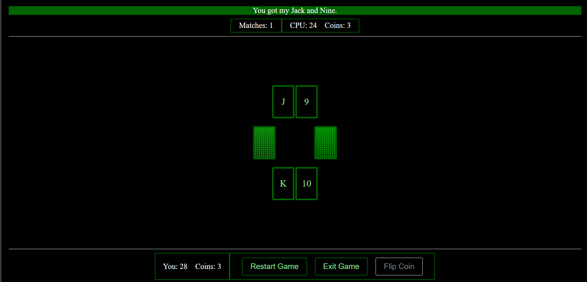

War Card Game

Overview:
To put my JavaScript skills to the test, I decided to recreate the war card game entirely from scratch using nothing but the three core web technologies. I've included additional features to make the game more interesting and allow the player to do more than just draw card after card.
Features:
- Looks up and displays backdrops at random for existing films.
- Allows the user to input a title and pulls up films the title applies to at random.
- Allows users to manually change backdrops and keep them from being switched out on refresh.
- Blocks backdrops of movies based on selected certifications and genres that may disturb users.
- Displays the current movie's poster and tagline (unless filtered by the user's preferences)
- Displays one of up to five goals inputted by the user.
- Allows the user to change the color and outline of text (with the exception of the settings link and credits bar).
Skills:
- REST
- JavaScript
- CSS
- HTML